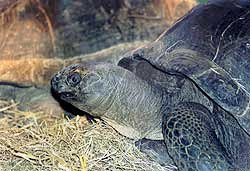

Sinds begin
jaren negentig zijn er in Reptielenzoo Iguana acht Seychellen-Reuzenschildpadden
te bewonderen.
Een andere Nederlandse
naam die ook wel gebruikt wordt voor deze soort is Aldabra-Reuzenschildpad.
De Latijnse naam is: Geochelone gigantea.
Andere Latijnse namen die tegenwoordig ook wel gebruikt worden zijn: Dipsochelys
dussumieri of Dipsochelys elephantina. Zolang de wetenschap er niet uit is
welke naam de juiste is, houden wij het op Geochelone gigantea. Deze schildpaddensoort
staat op de Rode Lijst van de IUCN (International Union for Conservation of
Nature and Natural Resources) in de categorie Kwetsbaar. Cites, appendix II.
Op onderstaande link staat een uitgebreid verslag in het Duits over deze schildpaddensoort
|  |